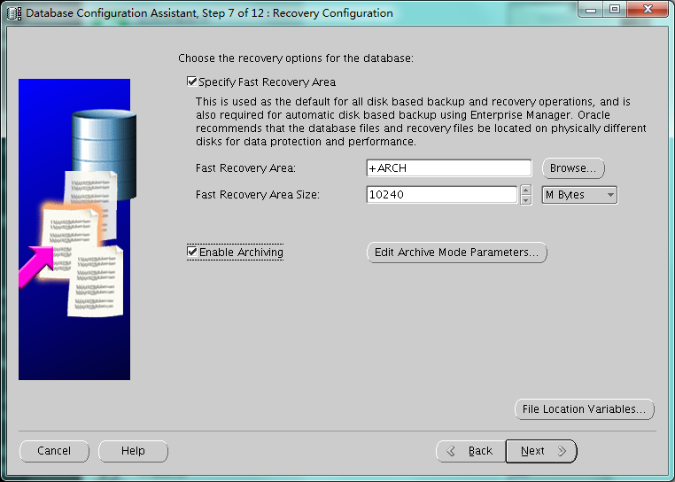
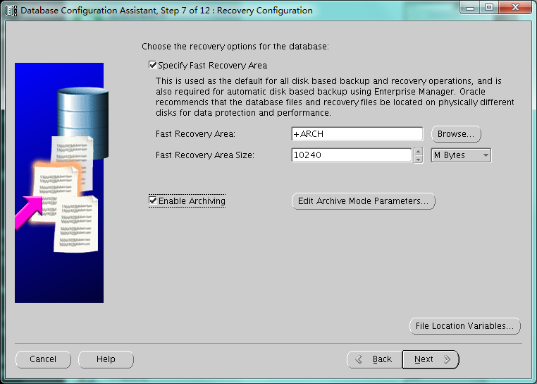

- 0.概述
- 1. 主机准备
- 2. 创建用户和用户组
- 3. 创建目录和赋予权限
- 4. 系统配置
- 5. 配置cluster所需要的磁盘组或者裸设备
- 6. 安装grid组件
- 7. 安装oracle组件
- 8. 配置实例
- 9.常用命令
- 10.相关视图
0.概述
在单机上安装asm，和安装集群类似，用grid用户安装cluster相关软件，用oracle用户安装
1. 主机准备
1.1 主机名和网络配置
hostname
vi /etc/sysconfig/network
vi /etc/hosts
1.2 磁盘准备
1.3 如果为非桌面环境，考虑先安装桌面相应的包（非必须）
yum -y groupinstall "X Window System" "Chinese Support" "Desktop"
yum -y install xterm
1.4 安装相应的rpm包
yum -y install binutils compat-libstdc++-33 elfutils-libelf elfutils-libelf-devel glibc glibc-common glibc-devel gcc- gcc-c++ libaio-devel libaio libgcc libstdc++ libstdc++-devel make sysstat unixODBC unixODBC-devel pdksh ksh compat-libcap1
1.5 关闭防火墙等
service iptables stop
chkconfig iptables off
service NetworkManager stop
chkconfig NetworkManager off
2. 创建用户和用户组
groupadd oinstall
groupadd dba
groupadd oper
groupadd asmadmin
groupadd asmdba
groupadd asmoper
useradd -g oinstall -G dba,asmdba,oper oracle
useradd -g oinstall -G dba,asmadmin,asmdba,asmoper grid
passwd grid
passwd oracle
3. 创建目录和赋予权限
mkdir -p /u01/app/11.2.0.4/grid
mkdir -p /u01/app/grid
mkdir -p /u01/app/oracle/product/11.2.0.4/db_1
chown -R oracle:oinstall /u01/app
chmod -R 775 /u01/app
4. 系统配置
4.1 内核参数
vi /etc/sysctl.conf
fs.aio-max-nr = 1048576
fs.file-max = 6815744
kernel.shmall = 2097152
#kernel.shmmax = 4398046511104 //一般设置为系统内存75%单位是字节
kernel.shmmni = 4096
kernel.sem = 250 32000 100 128
net.ipv4.ip_local_port_range = 9000 65500
net.core.rmem_default = 262144
net.core.rmem_max = 4194304
net.core.wmem_default = 262144
net.core.wmem_max = 1048586
使内核设置立即生效：
shell> /sbin/sysctl -p
4.2 limit限制
vi /etc/security/limits.conf
oracle soft nproc 2047
oracle hard nproc 16384
oracle soft nofile 1024
oracle hard nofile 65536
oracle soft stack 10240
grid soft nproc 2047
grid hard nproc 16384
grid soft nofile 1024
grid hard nofile 65536
grid soft stack 1024
4.3 login限制
vi /etc/pam.d/login
session required /lib64/security/pam_limits.so
session required pam_limits.so
4.4 grid用户环境变量
export ORACLE_BASE=/u01/app/grid
export ORACLE_HOME=/u01/app/11.2.0.4/grid
export LD_LIBRARY_PATH=$ORACLE_HOME/lib:.
export NLS_LANG=American_america.ZHS16GBK
export PATH=$PATH:$ORACLE_HOME/bin:.
export ORACLE_SID=+ASM
4.5 oracle用户环境变量
export ORACLE_BASE=/u01/app/oracle
export ORACLE_HOME=/u01/app/oracle/product/11.2.0.4/db_1
export LD_LIBRARY_PATH=$ORACLE_HOME/lib:.
export NLS_LANG=AMERICAN_AMERICA.ZHS16GBK
export ORACLE_SID=nazeebo
export PATH=$PATH:$ORACLE_HOME/bin:.
5. 配置cluster所需要的磁盘组或者裸设备
[root@nazeebo ~]# fdisk -l
Disk /dev/vda: 42.9 GB, 42949672960 bytes
255 heads, 63 sectors/track, 5221 cylinders
Units = cylinders of 16065 * 512 = 8225280 bytes
Sector size (logical/physical): 512 bytes / 512 bytes
I/O size (minimum/optimal): 512 bytes / 512 bytes
Disk identifier: 0x00020f78
Device Boot Start End Blocks Id System
/dev/vda1 * 1 5222 41940992 83 Linux
Disk /dev/vdb: 21.5 GB, 21474836480 bytes
16 heads, 63 sectors/track, 41610 cylinders
Units = cylinders of 1008 * 512 = 516096 bytes
Sector size (logical/physical): 512 bytes / 512 bytes
I/O size (minimum/optimal): 512 bytes / 512 bytes
Disk identifier: 0x00000000
Disk /dev/vdc: 26.8 GB, 26843545600 bytes
16 heads, 63 sectors/track, 52012 cylinders
Units = cylinders of 1008 * 512 = 516096 bytes
Sector size (logical/physical): 512 bytes / 512 bytes
I/O size (minimum/optimal): 512 bytes / 512 bytes
Disk identifier: 0x00000000
Disk /dev/vdd: 26.8 GB, 26843545600 bytes
16 heads, 63 sectors/track, 52012 cylinders
Units = cylinders of 1008 * 512 = 516096 bytes
Sector size (logical/physical): 512 bytes / 512 bytes
I/O size (minimum/optimal): 512 bytes / 512 bytes
Disk identifier: 0x00000000
在这儿有几种方法：
5.1 用scsi的方式获取到设备的uuid
在这儿，我将用lvm的方式模拟
pvcreate /dev/vdb
vgcreate ora_vg /dev/vdb
lvcreate -L 2g -n lv_asm_ocr ora_vg
lvcreate -L 20g -n lv_asm_data ora_vg
lvcreate -L 20g -n lv_asm_arch ora_vg
vgdisplay ora_vg
5.2 用raw的方式，有个坏处是系统重启后有可能会是的盘符错乱，使cluster起不来
所谓raw 设备，就是通过字符方式访问的设备，也就是读写设备不需要缓冲区。 在Linux 下，对磁盘值提供了块方式的访问。要想通过字符方式访问，必须配置raw 设备服务，并且Oracle 用户对这些raw 设备必须有访问的权限。 在2个节点上做如下操作：
1）修改/etc/udev/rules.d/60-raw.rules 文件
添加如下内容：
ACTION=="add", KERNEL=="vdb",RUN+="/bin/raw /dev/raw/raw1 %N"
ACTION=="add", KERNEL=="vdc",RUN+="/bin/raw /dev/raw/raw2 %N"
ACTION=="add", KERNEL=="vdd",RUN+="/bin/raw /dev/raw/raw3 %N"
ACTION=="add",KERNEL=="raw1", OWNER="grid", GROUP="oinstall", MODE="660"
ACTION=="add",KERNEL=="raw[2-3]", OWNER="oracle", GROUP="oinstall", MODE="660"
2） 重启服务：
shell> start_udev
Starting udev: [ OK ]
3） 查看raw设备：
shell> raw -qa
/dev/raw/raw1: bound to major 252, minor 16
/dev/raw/raw2: bound to major 252, minor 32
/dev/raw/raw3: bound to major 252, minor 48
shell> ls -lrt /dev/raw
total 0
crw-rw---- 1 root disk 162, 0 May 9 14:30 rawctl
crw-rw---- 1 oracle oinstall 162, 3 May 9 14:30 raw3
crw-rw---- 1 oracle oinstall 162, 2 May 9 14:30 raw2
crw-rw---- 1 grid oinstall 162, 1 May 9 14:30 raw1
5.3安装asmlib，用oracle 提供的操作系统层面的asm管理工具来进行asm磁盘的创建
6. 安装grid组件
[root@nazeebo softdb]# ll
total 3664224
drwxr-xr-x 7 root root 4096 Aug 27 2013 database
drwxr-xr-x 7 root root 4096 Aug 27 2013 grid
-rw-r--r-- 1 root root 1395582860 May 9 14:40 p13390677_112040_Linux-x86-64_1of7.zip
-rw-r--r-- 1 root root 1151304589 May 9 14:47 p13390677_112040_Linux-x86-64_2of7.zip
-rw-r--r-- 1 root root 1205251894 May 9 14:53 p13390677_112040_Linux-x86-64_3of7.zip
[root@nazeebo softdb]#
[root@nazeebo softdb]# chown -R grid:oinstall grid
[root@nazeebo softdb]# chown -R oracle:oinstall database/
[root@nazeebo softdb]# ll
total 3664224
drwxr-xr-x 7 oracle oinstall 4096 Aug 27 2013 database
drwxr-xr-x 7 grid oinstall 4096 Aug 27 2013 grid
-rw-r--r-- 1 root root 1395582860 May 9 14:40 p13390677_112040_Linux-x86-64_1of7.zip
-rw-r--r-- 1 root root 1151304589 May 9 14:47 p13390677_112040_Linux-x86-64_2of7.zip
-rw-r--r-- 1 root root 1205251894 May 9 14:53 p13390677_112040_Linux-x86-64_3of7.zip
[root@nazeebo softdb]#
用grid用户安装
6.1 图形化界面安装过程如图（仅列举关键的图）：
p13390677_112040_Linux-x86-64_3of7.zip

 根据提示 用root执行两个脚本
根据提示 用root执行两个脚本
[root@nazeebo ~]# /u01/app/oraInventory/orainstRoot.sh
Changing permissions of /u01/app/oraInventory.
Adding read,write permissions for group.
Removing read,write,execute permissions for world.
Changing groupname of /u01/app/oraInventory to oinstall.
The execution of the script is complete.
[root@nazeebo ~]# /u01/app/11.2.0.4/grid/root.sh
Performing root user operation for Oracle 11g
The following environment variables are set as:
ORACLE_OWNER= grid
ORACLE_HOME= /u01/app/11.2.0.4/grid
Enter the full pathname of the local bin directory: [/usr/local/bin]:
Copying dbhome to /usr/local/bin ...
Copying oraenv to /usr/local/bin ...
Copying coraenv to /usr/local/bin ...
Creating /etc/oratab file...
Entries will be added to the /etc/oratab file as needed by
Database Configuration Assistant when a database is created
Finished running generic part of root script.
Now product-specific root actions will be performed.
Using configuration parameter file: /u01/app/11.2.0.4/grid/crs/install/crsconfig_params
Creating trace directory
LOCAL ADD MODE
Creating OCR keys for user 'grid', privgrp 'oinstall'..
Operation successful.
LOCAL ONLY MODE
Successfully accumulated necessary OCR keys.
Creating OCR keys for user 'root', privgrp 'root'..
Operation successful.
CRS-4664: Node nazeebo successfully pinned.
Adding Clusterware entries to upstart
nazeebo 2018/05/09 16:11:36 /u01/app/11.2.0.4/grid/cdata/nazeebo/backup_20180509_161136.olr
Successfully configured Oracle Grid Infrastructure for a Standalone Server
[root@nazeebo ~]#
6.2 用asmca来创建asm磁盘组
切换到grid用户，用asmca图形化工具来创建asm磁盘供之后的database使用
安装过程如图（仅仅列出关键步骤）
 用asmcmd也可以看见
用asmcmd也可以看见
[grid@nazeebo grid]$ asmcmd
ASMCMD> lsdg
State Type Rebal Sector Block AU Total_MB Free_MB Req_mir_free_MB Usable_file_MB Offline_disks Voting_files Name
MOUNTED EXTERN N 512 4096 1048576 25600 25548 0 25548 0 N ARCH/
MOUNTED EXTERN N 512 4096 1048576 25600 25548 0 25548 0 N DATA/
MOUNTED EXTERN N 512 4096 1048576 20480 20421 0 20421 0 N OCR/
ASMCMD>
7. 安装oracle组件
将安装包解压在同一个目录
unzip p13390677_112040_Linux-x86-64_1of7.zip
unzip p13390677_112040_Linux-x86-64_2of7.zip
安装过程如图（仅仅列出关键步骤）


 根据提示 用root执行脚本
根据提示 用root执行脚本
[root@nazeebo ~]# /u01/app/oracle/product/11.2.0.4/db_1/root.sh
Performing root user operation for Oracle 11g
The following environment variables are set as:
ORACLE_OWNER= oracle
ORACLE_HOME= /u01/app/oracle/product/11.2.0.4/db_1
Enter the full pathname of the local bin directory: [/usr/local/bin]:
The contents of "dbhome" have not changed. No need to overwrite.
The contents of "oraenv" have not changed. No need to overwrite.
The contents of "coraenv" have not changed. No need to overwrite.
Entries will be added to the /etc/oratab file as needed by
Database Configuration Assistant when a database is created
Finished running generic part of root script.
Now product-specific root actions will be performed.
Finished product-specific root actions.
[root@nazeebo ~]#

8. 配置实例
8.1配置监听
因为用grid安装了cluster的组件用于asm管理，而这一步中，grid已经创建了监听，故不再需要新建监听了。 查看已经创建了的监听的状态
[grid@nazeebo ~]$ lsnrctl status
LSNRCTL for Linux: Version 11.2.0.4.0 - Production on 10-MAY-2018 15:48:55
Copyright (c) 1991, 2013, Oracle. All rights reserved.
Connecting to (DESCRIPTION=(ADDRESS=(PROTOCOL=IPC)(KEY=EXTPROC1521)))
STATUS of the LISTENER
------------------------
Alias LISTENER
Version TNSLSNR for Linux: Version 11.2.0.4.0 - Production
Start Date 09-MAY-2018 16:15:18
Uptime 0 days 0 hr. 5 min. 38 sec
Trace Level off
Security ON: Local OS Authentication
SNMP OFF
Listener Parameter File /u01/app/11.2.0.4/grid/network/admin/listener.ora
Listener Log File /u01/app/grid/diag/tnslsnr/nazeebo/listener/alert/log.xml
Listening Endpoints Summary...
(DESCRIPTION=(ADDRESS=(PROTOCOL=ipc)(KEY=EXTPROC1521)))
(DESCRIPTION=(ADDRESS=(PROTOCOL=tcp)(HOST=nazeebo)(PORT=1521)))
Services Summary...
Service "+ASM" has 1 instance(s).
Instance "+ASM", status READY, has 1 handler(s) for this service...
The command completed successfully
8.2dbca建库
安装过程如图（仅仅列出关键步骤）

 


9.常用命令
9.1检查crs相关的状态
因为是单机的，所以crsctl check crs和crsctl check cluster都无效
[grid@nazeebo ~]$ crsctl check css CRS-4529: Cluster Synchronization Services is online [grid@nazeebo ~]$ crsctl check has CRS-4638: Oracle High Availability Services is online [grid@nazeebo ~]$ crsctl check evm CRS-4533: Event Manager is online9.2查看资源状态(nodeapps节点应用程序，ASM实例，数据库实例等)
[grid@nazeebo ~]$ crsctl status res -t -------------------------------------------------------------------------------- NAME TARGET STATE SERVER STATE_DETAILS -------------------------------------------------------------------------------- Local Resources -------------------------------------------------------------------------------- ora.ARCH.dg ONLINE ONLINE nazeebo ora.DATA.dg ONLINE ONLINE nazeebo ora.LISTENER.lsnr ONLINE ONLINE nazeebo ora.OCR.dg ONLINE ONLINE nazeebo ora.asm ONLINE ONLINE nazeebo Started ora.ons OFFLINE OFFLINE nazeebo -------------------------------------------------------------------------------- Cluster Resources -------------------------------------------------------------------------------- ora.cssd 1 ONLINE ONLINE nazeebo ora.diskmon 1 OFFLINE OFFLINE ora.evmd 1 ONLINE ONLINE nazeebo ora.nazeebo.db 1 ONLINE ONLINE nazeebo Open若资源以ora.开头的 用srvctl 来维护 否则用crsctl srvctl 维护的资源包括：ASM，database，instance，service，node applications ,listener,vip address,gns,scan vip ,scan listener ,oracle home, oc4j, server,server pool, asm disk group, asm file system
11.2的cluster的 正确启动集群：
crsctl start cluster -all crsctl stop cluster -all crsctl check cluster -all
9.3查看各资源状态(nodeapps节点应用程序，ASM实例，数据库实例等)
[grid@nazeebo ~]$ crs_stat -t -v
Name Type R/RA F/FT Target State Host
----------------------------------------------------------------------
ora.ARCH.dg ora....up.type 0/5 0/ ONLINE ONLINE nazeebo
ora.DATA.dg ora....up.type 0/5 0/ ONLINE ONLINE nazeebo
ora....ER.lsnr ora....er.type 0/5 0/ ONLINE ONLINE nazeebo
ora.OCR.dg ora....up.type 0/5 0/ ONLINE ONLINE nazeebo
ora.asm ora.asm.type 0/5 0/ ONLINE ONLINE nazeebo
ora.cssd ora.cssd.type 0/5 0/5 ONLINE ONLINE nazeebo
ora.diskmon ora....on.type 0/10 0/5 OFFLINE OFFLINE
ora.evmd ora.evm.type 0/10 0/5 ONLINE ONLINE nazeebo
ora.nazeebo.db ora....se.type 0/2 0/1 ONLINE ONLINE nazeebo
ora.ons ora.ons.type 0/3 0/ OFFLINE OFFLINE
9.4查看数据库的配置新
[grid@nazeebo ~]$ srvctl config database
nazeebo
[grid@nazeebo ~]$ srvctl config database -d nazeebo -a
Database unique name: nazeebo
Database name: nazeebo
Oracle home: /u01/app/oracle/product/11.2.0.4/db_1
Oracle user: oracle
Spfile: +DATA/nazeebo/spfilenazeebo.ora
Domain:
Start options: open
Stop options: immediate
Database role: PRIMARY
Management policy: AUTOMATIC
Database instance: nazeebo
Disk Groups: DATA,ARCH
Services:
Database is enabled
9.5查看asm的配置信息
[grid@nazeebo ~]$ srvctl status asm
ASM is running on nazeebo
[grid@nazeebo ~]$ srvctl status asm -a
ASM is running on nazeebo
ASM is enabled.
[grid@nazeebo ~]$ srvctl config asm -a
ASM home: /u01/app/11.2.0.4/grid
ASM listener: LISTENER
Spfile: +OCR/asm/asmparameterfile/registry.253.975687351
ASM diskgroup discovery string:
ASM is enabled.
9.6查看ocr的配置信息
[grid@nazeebo ~]$ ocrcheck
Status of Oracle Cluster Registry is as follows :
Version : 3
Total space (kbytes) : 262120
Used space (kbytes) : 152
Available space (kbytes) : 261968
ID : 1642006547
Device/File Name : /u01/app/11.2.0.4/grid/cdata/localhost/local.ocr
Device/File integrity check succeeded
Device/File not configured
Device/File not configured
Device/File not configured
Device/File not configured
Cluster registry integrity check succeeded
Logical corruption check bypassed due to non-privileged user
10.相关视图
v$asm_disk(_stat) --查看磁盘及其状态信息 v$asm_diskgroup(_stat) --查看磁盘组及其状态信息 v$asm_operation --查看当前磁盘的操作信息 v$asm_client --返回当前连接的客户端实例信息 v$asm_file --返回asm文件的相关信息 v$asm_template --返回asm文件样本的相关信息 v$asm_alias --返回asm文件的别名信息